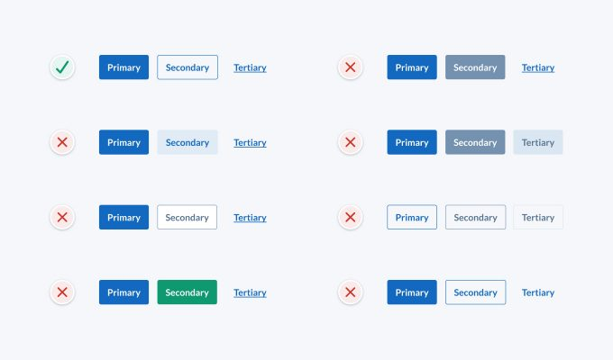

Button design tips to avoid common mistakes
Practical button design tips to avoid common usability and accessibility problems.
I’ve been a designer for nearly 2 decades now and I’ve used buttons in many projects, but I don’t think I’ve ever taken the time to think about button design in detail. It wasn’t until recently that I realised I’d been making some common button design mistakes (and I’m not the only one).
If you pull out your phone, open a few apps and browse a few websites, I’ll bet you come across quite a few buttons. I’ll also bet that many of those buttons have issues that pose a potential risk to usability and accessibility. There are a lot of problematic buttons out there, even from large companies and experienced designers, so I put together some quick and practical button design tips to avoid these problems and design better buttons.
Firstly, I’ll go through some popular button designs and highlight their problems using objective UI design principles. I’ll avoid any subjective thoughts based on aesthetics, “gut feeling”, or what looks pretty. I also won’t go into code here, as there’s a lot we can do on the design side of things first. I’ll finish up with some button design tips and suggestions for best practice button design.
Common button design mistakes
For most projects, your design system will need 3 button styles; primary, secondary and tertiary. They need to have a clear visual hierarchy to display actions of varying importance. In this article, we’ll compare groups of these 3 button styles.
I’ve highlighted the issues with some popular button designs below. These issues pose a potential risk to usability, so it’s safest to avoid them if possible. We’re aiming to at least meet WCAG 2.0 level AA accessibility requirements as this is the most common standard and a good place to start.
Button group 1
To help the vision impaired tell the difference between user interface components (like form field borders, buttons and tabs), interface components need to have a colour contrast ratio of at least 3:1. Decorative styles that aren’t required to distinguish interface components can have a lower contrast ratio.
In this example, the secondary button fill contrast ratio against the background is less than 3:1, which is too low to clearly indicate the button shape to the vision impaired. Some may argue that the secondary button fill is decorative and doesn’t need to have a contrast ratio of 3:1 to be accessible, but I think the fill is needed to identify the secondary button as an actionable element. Without the fill, it’s just plain blue text with no affordance but colour. We could also add a border to the secondary button to fix this issue.
Button group 2
It’s common for disabled buttons to be light grey in colour. The secondary button in this example could be mistaken as being in a disabled state due to its light grey colour. I think it’s safest to avoid light grey buttons to reduce potential confusion. I’d also suggest avoiding disabled buttons if you can, but that’s a discussion for another day.
Button group 3
To ensure that a wider audience can read small text (18px and under), it should have a colour contrast ratio of at least 4.5:1. The button styles in this example have the following issues:
- The secondary button text contrast ratio is too low and should be at least 4.5:1 to ensure it’s accessible.
- The primary and secondary buttons conflict due to their similar style and lack of contrast. This breaks the visual hierarchy and makes it unclear which action is the most important. Since the buttons have the same style, a contrast ratio of at least 3:1 is needed to clearly distinguish between them.
Button group 4
These button styles have similar issues to the previous example:
- The secondary button could be mistaken as being in a disabled state due to its light grey colour.
- The secondary button text contrast ratio is too low and should be at least 4.5:1 to ensure it’s accessible.
- The primary and secondary buttons also conflict due to their similar style and lack of contrast.
Button group 5
These button styles are too similar for the vision impaired to distinguish between them. The contrast ratio between buttons is the only way to tell the difference between them and it’s too low (contrast needs to be at least 3:1). Buttons should have a clear visual hierarchy that doesn’t rely on colour alone.
Button group 6
These button styles have similar issues to the example above:
- Button styles are too similar in contrast and style for the vision impaired to tell the difference between them.
- The contrast ratio of the tertiary button stroke must be at least 3:1 to be accessible and clearly identify it as an actionable element.
Button group 7
When it comes to accessibility, it’s important that we don’t rely on colour alone to distinguish interface elements. Those who are colourblind won’t be able to tell the difference between elements.
In this example, the tertiary button isn’t accessible as the only indicator that it’s actionable is colour. This means that those who are colourblind may not be able to distinguish it from plain text.
The context, position and close proximity of the tertiary button to other buttons may help distinguish it from plain text in some cases, but there’s still a risk that it may cause confusion.
Button group 8
Every detail of an interface design should have a logical purpose. Why are the primary and secondary button shapes different in this example? Do they act differently? Avoid inconsistent button shapes as they can cause confusion.
Button group 9
Visual hierarchy is how we communicate the relative importance of interface elements. The purpose of the 3 button styles is to indicate which actions are more important so that people know what to do next. The button styles in this example have the following issues:
- The visual hierarchy is unclear as the primary and secondary buttons have similar visual weight.
- The secondary button fill contrast ratio is below 3:1, which is too low to clearly indicate button shape to the vision impaired.
Button design tips
Based on the button design mistakes above, here are some quick and practical button design tips to keep in mind to design user-friendly and accessible buttons:
- Buttons should have a clear visual hierarchy that doesn’t rely on colour alone.
- Contrast ratio of the button shape must be at least 3:1 to ensure people can identify it as an actionable element.
- Button text contrast ratio must be at least 4.5:1 to meet WCAG 2.0 level AA accessibility requirements.
- If buttons are identical styles, the contrast ratio between buttons must be at least 3:1 to ensure the vision impaired can distinguish between them.
- Use a large touch target (at least 48pt) to ensure people can easily tap buttons.
- Make sure there’s sufficient space between buttons so people don’t mistakenly tap the wrong button. I usually use 16pt to be safe.
A suggestion for better buttons
I suggest using the following button styles as they’re very familiar, accessible, and have a clear visual hierarchy that isn’t dependent on colour alone.
You might have noticed that the tertiary button looks identical to a text link, but is that really an issue? Traditionally text links were designed to go somewhere and buttons were designed to perform an action. These days, many are unaware of this interaction pattern and certainly wouldn’t expect it, so I don’t think we need to stick to it. Just ensure buttons are coded as buttons and links are coded as links, regardless of what they look like. This will help you avoid accessibility issues with screen readers.
In the below hero banner example, important call to action links are made to look like buttons to make them more prominent and create a clearer visual hierarchy.
In the below message dialog box example, we can see our 3 button styles in action. Even though the tertiary button looks like a link, it’s clear in this context that clicking it will perform an action rather than take you to another page.
I’m not saying that these button designs are the only way to design buttons, but they’re free of the many usability and accessibility risks mentioned above, so they’re a pretty safe option. I hope you found these button design tips helpful and I’d love to hear your thoughts or feedback via Twitter.
Learn more practical UI design tips
This is just 1 of over 100 logic-driven design guidelines from my UI design book. If you found it helpful, check out the book and follow me on Twitter and LinkedIn for daily design tips.